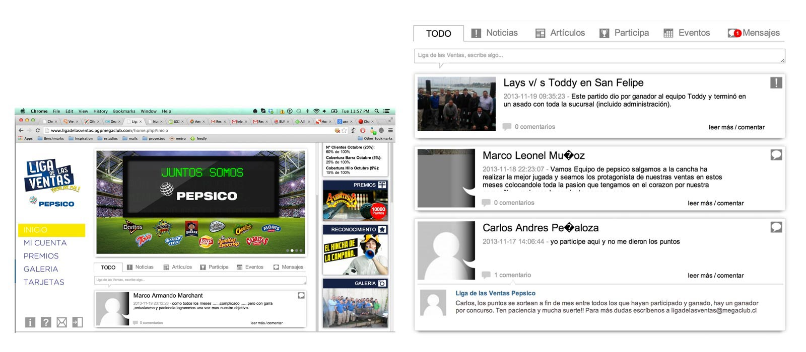
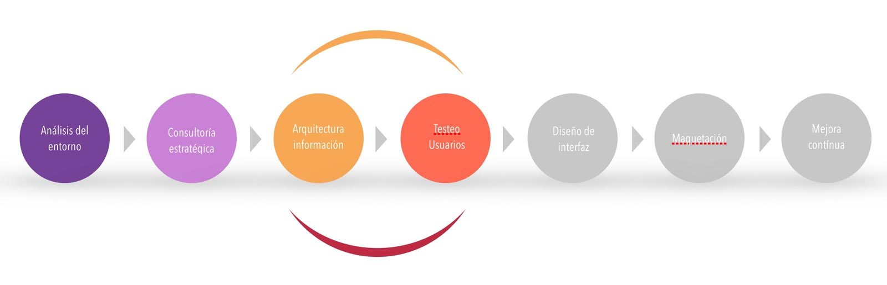
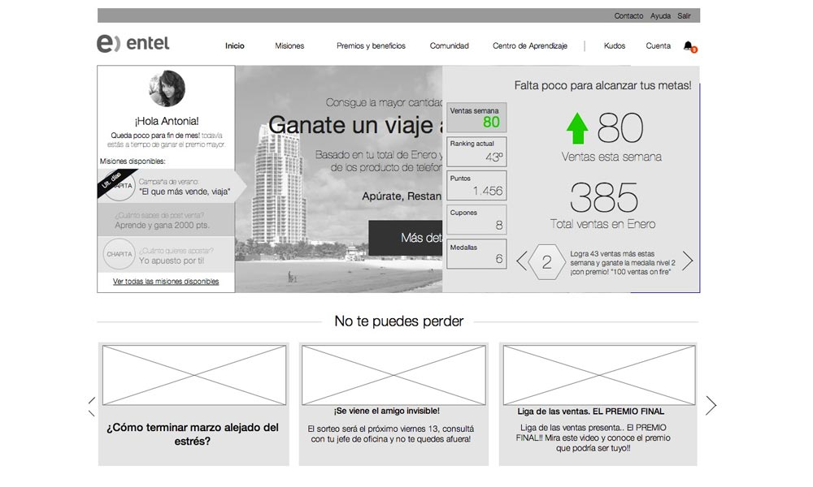

Acerca del cliente
Megaclub es una empresa chilena que se dedica a mejorar, reconocer e incentivar a los equipos y personas de diversas empresas de chile mediante una plataforma virtual de incentivos y competencia adaptadas a cada empresa.
Con el tiempo esta plataforma fue quedándose pequeña para las funcionalidades que sus clientes les demandaban y nos contactaron para que les ayudásemos a pensar en una nueva versión de la plataforma, orientada a incentivar a los equipo de trabajo desde las dinámicas del juego, y mediante este enfoque mejorar los indicadores fijados por la empresa anteriormente (Ventas, reconocimientos, menor rotación, etc)
El proyecto antes de comenzar el rediseño.

Cuál fue el alcance de este proyecto?
El alcance de esta primera etapa del proyecto llega hasta definir una arquitectura de información que soporte las nuevas funcionalidades que se quieren incorporar a la plataforma y poder contar con un prototipo navegable sobre el cual hacer pruebas de usabilidad.

¿Qué hicimos en este proyecto?
- Comprendimos las necesidades de información de los distintos tipos de usuarios que utilizan la plataforma.
- Creamos una arquitectura de información pensada desde el usuario y generamos un prototipo navegable del sitio para que sirva de guía para los equipos de diseño y desarrollo.
Complementamos la investigación con un benchmark de mercado donde analizamos en profundidad 6 plataformas de gamification en el que revisamos las tendencias y buenas prácticas de los competidores de megaclub.
Auditoría y consultoría
Teniendo claras las expectativas de los distintos involucrados en el proyecto y Antes de comenzar con la arquitectura definimos 10 grandes lineamientos que guiarían el proceso de diseño y 5 tipos de usuarios con distintas motivaciones y barreras las cuales teníamos que considerar en el proyecto.
Arquitectura de información
Una vez definidos los vectores del rediseño, comenzamos con un trabajo de arquitectura de información, en donde definimos un nuevo árbol de contenidos para albergar las nuevas funcionalidades a incorporarse. Armamos una estructura de información flexible con tres secciones de base (comunidad) y que mediante distintos complementos se adapta al objetivo del cliente (Reconocimiento, incentivo, comunicación, etc)
4. Prototipado para testeo

Desde un inicio hemos sabido que este es un proyecto complejo donde la clave del éxito está en que logremos enganchar a los usuarios finales en las dinámicas, ya sea mediante estímulos como el catálogo de premios o las chapitas de reconocimiento. Es por eso que antes de comenzar con el diseño y desarrollo preparamos un prototipo navegable de las principales secciones para testear con usuarios y poder corregir lo que haya que corregir.